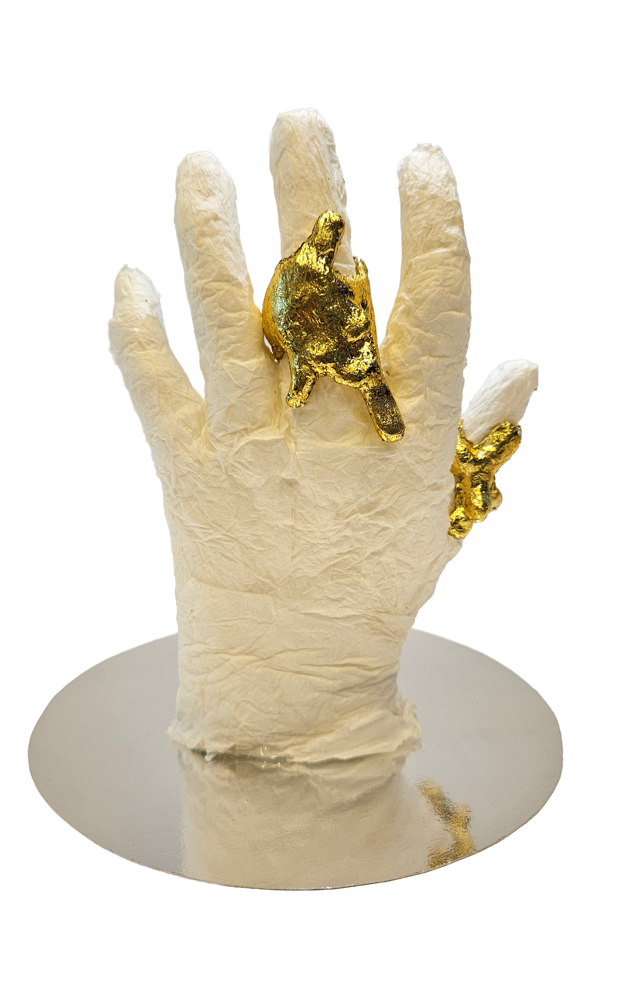
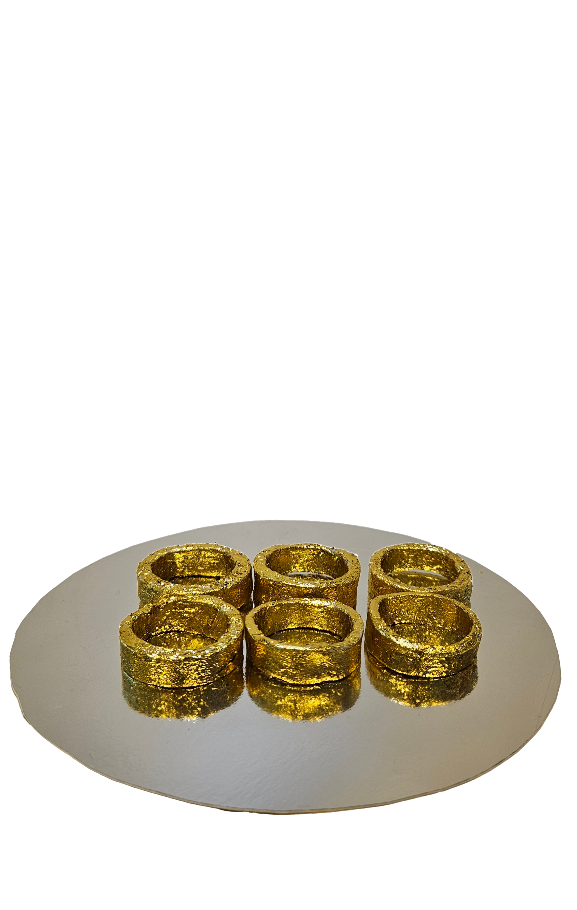

Smeltende sieraden
Intro
Een alledaags sieradendoosje lijkt op het eerste gezicht een object van luxe. Glanzend materiaal, een spiegel en decoratieve pauwenmotieven suggereren waarde, terwijl het object zelf grotendeels bestaat uit goedkope, massaal geproduceerde materialen. Vanuit die tegenstelling ontstond een onderzoek naar de vraag waar waarde eigenlijk vandaan komt.
Onderzoek
Het sieradendoosje werd bekeken vanuit verschillende lagen: materiaal, economie, geschiedenis, gebruik en cultuur. Achter het luxe uiterlijk blijken karton, schuimrubber en polyester te schuilen, vaak afkomstig uit grootschalige productie. De lage productiekosten vertellen echter maar een deel van het verhaal: lage lonen, milieubelasting en de beperkte recyclebaarheid van materialen blijven grotendeels onzichtbaar.
Tegelijkertijd heeft het sieradendoosje door de geschiedenis heen meer betekend dan alleen een manier om sieraden op te bergen. Het beschermt bezittingen, laat status zien en is onderdeel geworden van een bredere cadeaucultuur. In het dagelijks gebruik kan het bovendien een persoonlijke bewaarplek worden voor herinneringen en emotionele waarde.
“Is iets waardevol door het materiaal waaruit het bestaat, of door de betekenis die we eraan geven?”
Daarbij kwamen ook thema's naar voren als schoonheidsidealen, genderrollen, consumptie en wereldwijde ongelijkheid.
Concept
Vanuit dit onderzoek ontstond een concept rond identiteit en massaproductie. Sieraden worden vaak op grote schaal en vrijwel identiek geproduceerd, terwijl ze juist worden gedragen om iets persoonlijks en unieks uit te drukken. Het idee van uniek-zijn blijkt daarmee soms een illusie, versterkt door marketing, trends en consumptie.
Het concept smeltende sieraden draait dit principe om. Een sieraad begint als een perfect en identiek geproduceerd object, maar verandert door warmte, aanraking en gebruik. Het materiaal vervormt en wordt daardoor steeds persoonlijker.
De gebruiker wordt zo niet alleen drager, maar ook medeontwerper. Het uiteindelijke object is niet langer reproduceerbaar en krijgt zijn waarde juist door de interactie en betekenis die eraan zijn gegeven.